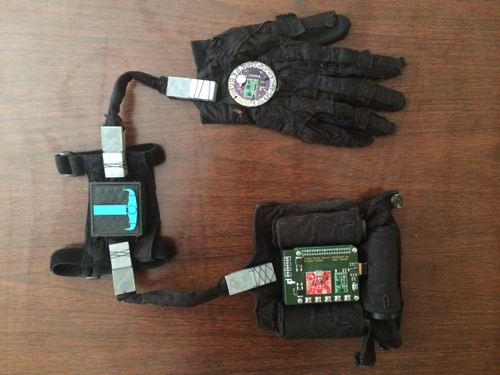

A Comfortable Wearable Device...
Our first wearable device, “Reach,” was built for the everyday hacker. Reach is being designed for you to interface with computers, light machinery, and the virtual world in ways that you never thought were possible. But perhaps most importantly, Reach is a comfortable addition to whatever system you’re building.